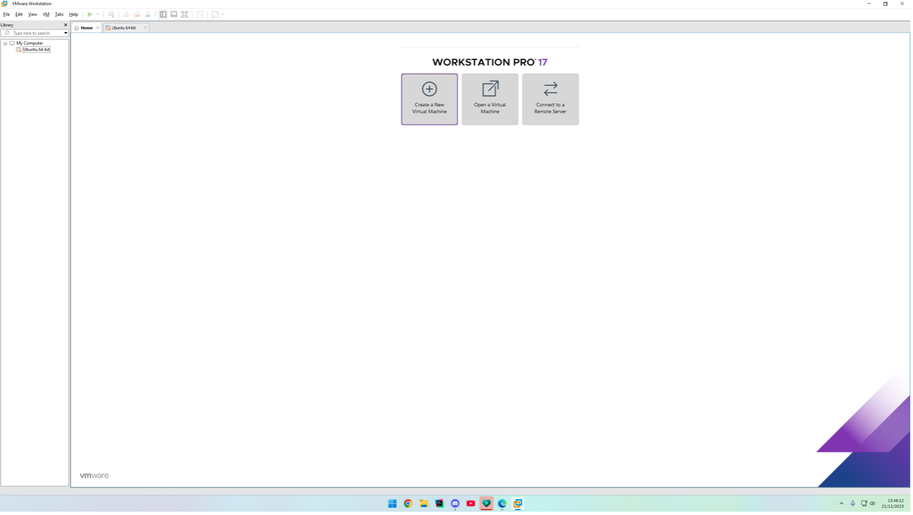
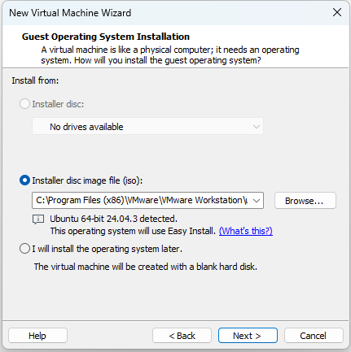
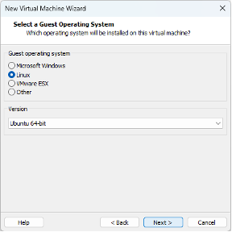
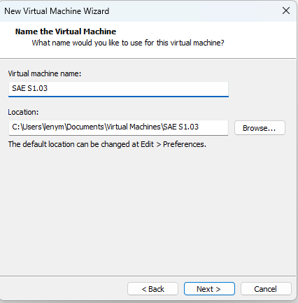
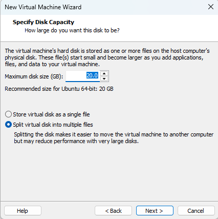
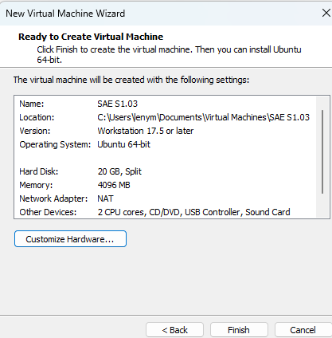
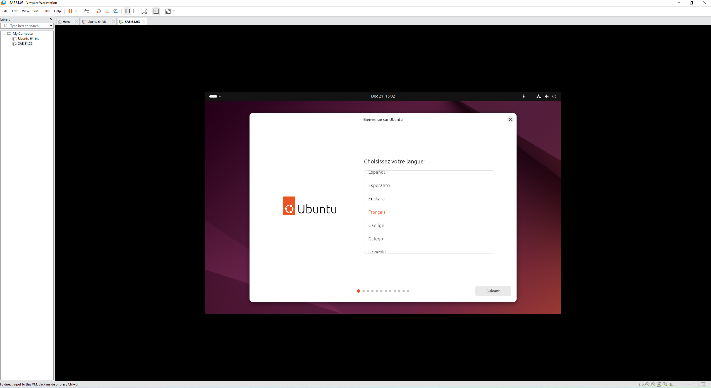
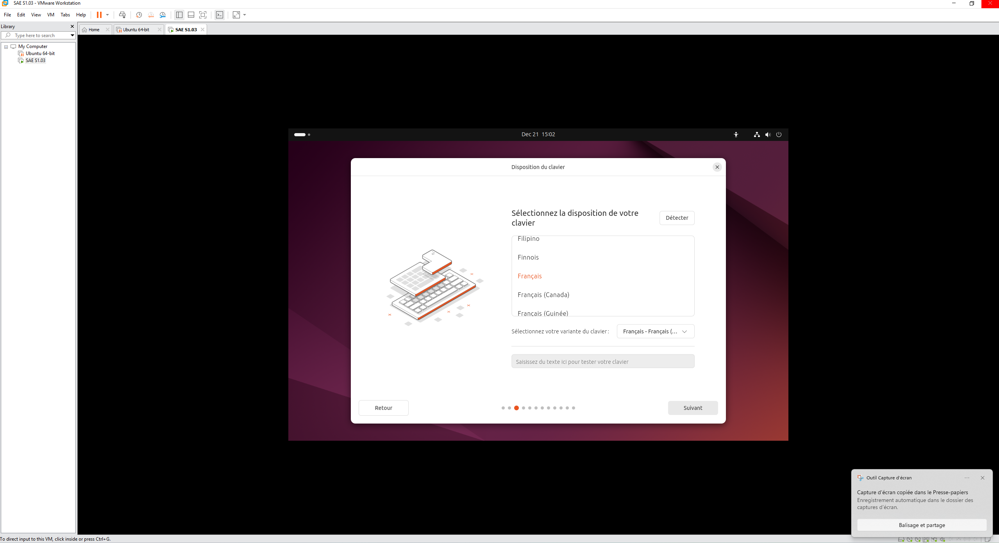
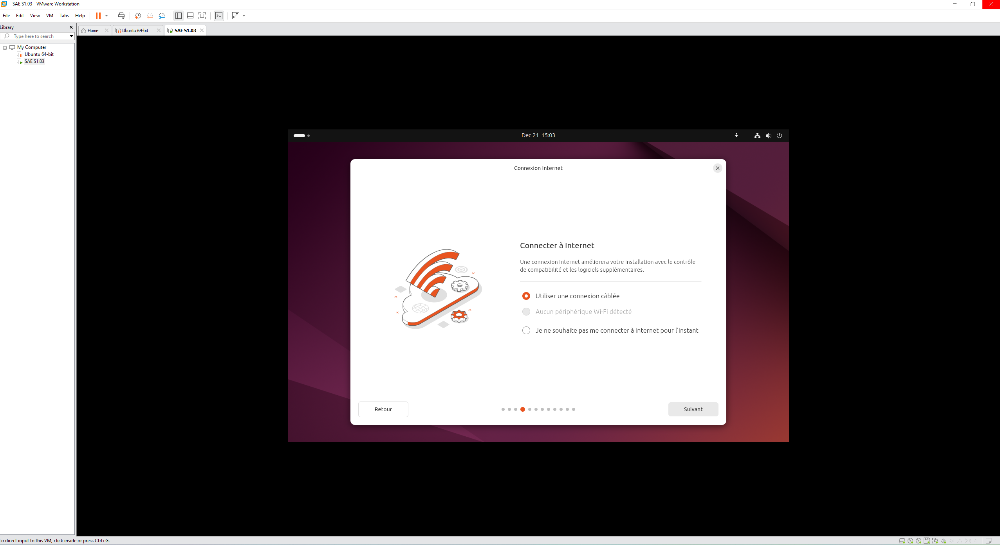
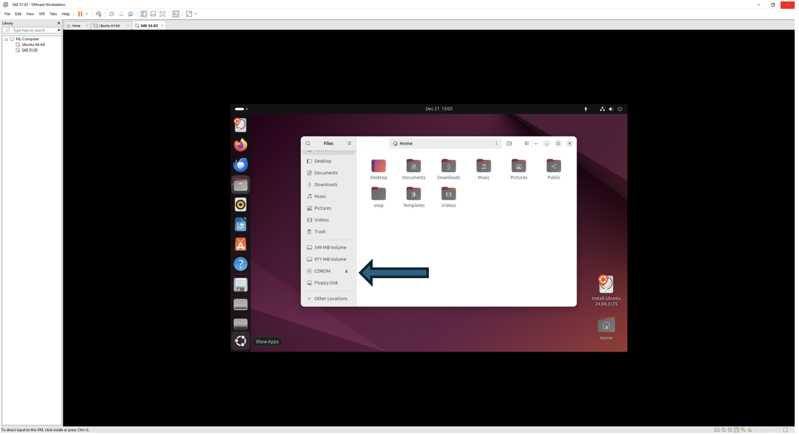

Etapes de la création d'une machine virtuelle et de la configuration du Système d'exploitation
Création de la VM
On a décidé d’utiliser l’environnement VMWare Workstation pour créer notre machine virtuelle
Après avoir installé le logiciel, on clique sur « Create a New Virtual Machine » :

On a décidé d’utiliser la distribution de Linux Ubuntu qu’on a obtenu sur ce site :
On donne l’iso qu’on a installé dans « Installer disc image file (iso) » :

On sélectionne le Système d’exploitation que l’on veut avoir sur notre VM :

On choit ensuite le nom de notre VM et son lieu de sauvegarde :

On doit maintenant donner une taille maximale pour le disque dur de la machine virtuelle (qui est sur le disque de la machine physique). On choisit la taille recommandée pour Ubuntu : 20 Go.

On laisse les derniers paramètres de la VM par défaut :

La VM est maintenant créée sur VMWare
Configuration du SE
On doit configurer Ubuntu. On sélectionne la langue :

On sélectionne la disposition du clavier :

Notre machine est reliée au réseau par câble uniquement, donc on sélectionne cette option pour notre VM :

On doit éjecter le disque CDRom (pour éviter que la VM ne boot à chaque redémarrage) :
